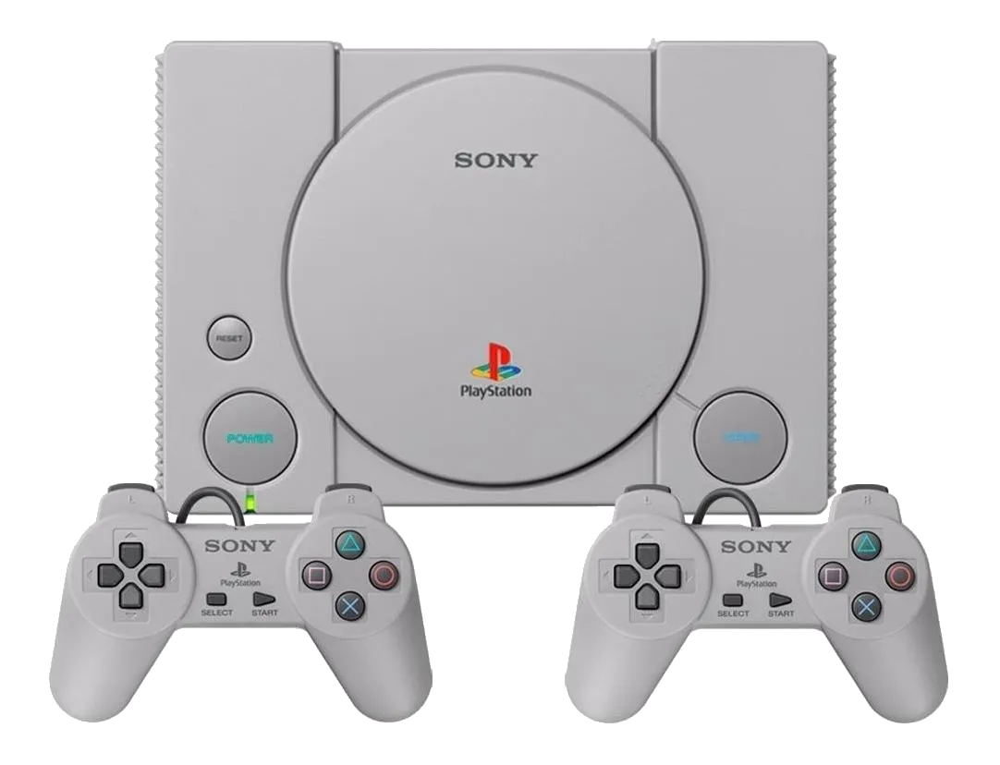
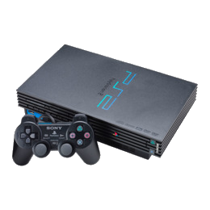
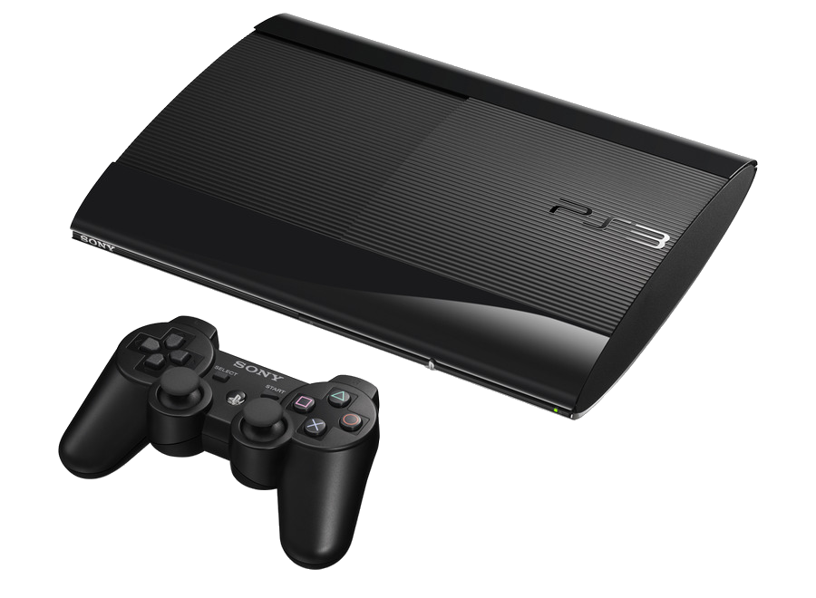
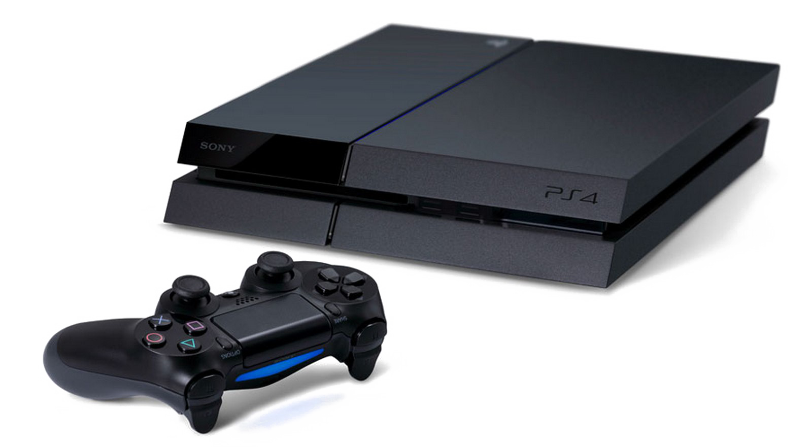
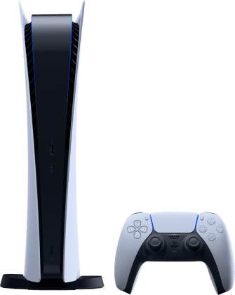

Nosotros
Al igual que vos, somos apasionados en el mundo de los videojuegos, es por eso que nos dedicamos a ofrecerte lo mejor en consolas y al mejor precio.
Catálogo
PlayStation 1
- Precio:
$21.580
- Modelo:
Classic
- Marca:
Sony
- Color:
Gris
- Características:
Cuenta con una capacidad de 16 GB, un procesador de 4 núcleos y uno gráfico. Brinda una experiencia dinámica, respuestas ágiles, y transiciones fluidas de imágenes en alta definición. Por otro lado, tiene puerto USB y salida HDMI, que permiten conectar accesorios y cargar la batería de tu control mientras jugás.
Contiene una memoria RAM de 1 GB, tipo de memoria DDR3 y una resolución máxima de salida de video de 1280 px x 720 px. Posee un procesador MediaTek MT8167A, una CPU de 4x1.5 GHz ARM Cortex A-35. Un GPU PowerVR GE8300. La Velocidad del procesador es de 1.5 GHz. Lee juegos en formato CD y DVD. - Dimensiones:
Altura x Ancho x Profundidad = 33 mm x 149 mm x 105 mm
- Peso:
170gr
Play Station 2
- Precio:
$27.999
- Modelo:
Classic
- Marca:
Sony
- Color:
Negro
- Características:
- Dimensiones:
Altura x Ancho x Profundidad= 203 mm x 152 mm x 28 mm
- Peso:
2 kg
Cuenta con una capacidad de 128GB, con una memoria RAM de 32GB. Incluye memory card para dejar justo donde te quedaste y poder continuar luego. Posee un procesador GPU Graphics Synthesizer con una velocidad de 147 GHz. Lee juegos en formato CD y DVD.
Play Station 3
- Precio:
$64.999
- Modelo:
Slim
- Marca:
Sony
- Color:
Negro
- Características:
- Dimensiones:
Altura x Ancho x Profundidad= 65 mm x 290 mm x 290 mm
- Peso:
2.4kg
Cuenta con una capacidad de 320GB con una memoria RAM DE 256MB. Incluye Wifi, tipo de memoria XDR, GDDR3. Fue creada con un procesador CPU cell Broadband Engine, un GPU RSX con una velocidad de 3.2 GHz. Viene acompañada de controles inalámbricos. Lee juegos en formatos Blu-ray, DVD, CD y Digital.
Play Station 4
- Precio:
$210.000
- Modelo:
Slim
- Marca:
Sony
- Color:
Negro
- Características:
- Dimensiones:
Altura x Ancho x Profundidad= 3.9 cm x 2.65 cm x 2.88 cm.
- Peso:
2.8 kg.
Cuenta con una capacidad de 1TB con una memoria RAM de 8GB, un tipo de memoria GDDR5. Se conecta mediante wifi, HDMI, USB, Bluetooth. Posee una resolución máxima de salida de video de 1920 px x 1080px; un procesador con CPU AMD Jaguar, un GPU AMD Radeon con una velocidad de 1.6 GHz. Contiene 8 núcleos de CPU. Lee juegos en formate Blu-ray Y Digital.
Play Station 5
- Precio:
$335.000
- Modelo:
Playstation 5 con lectora
- Marca:
Sony
- Color:
Blanco
- Características:
- Dimensiones:
Altura x Ancho x Profundidad= 260 mm x 390 mm x 104 mm
- Peso:
4.5 kg
Cuenta con una capacidad de 825GB con una memoria RAM de 16 GB, tipo de memoria GDDR6. Se conecta mediante wifi, HDMI, UBS, Bluetooth o mediante conectividad de red móvil de 4G. Posee controles inalámbricos. Su resolución máxima de salida de video es de 3840px x 2160px. Su procesador CPU AMD Ryzen Zen 2 tiene 8 núcleos, un GPU AMD Radeon con una velocidad de 3.5GHz. Lee juegos en formato Ultra HD Blu-ray, Digital, etc.
Volver al Inicio